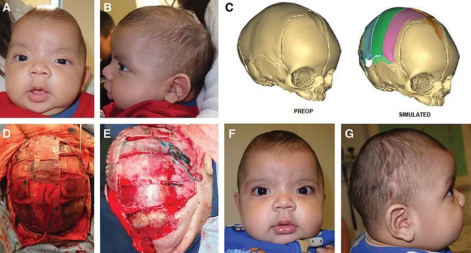

DX.6 — Craniosténose
La craniosténose déforme la tête plus qu’elle ne la grossit : une suture soudée trop tôt bride la croissance et donne une forme typiqueS1. Le diagnostic reste clinique, et le médecin adresse l’enfant sans examen préalable à un centre spécialisé, bien avant l’âge de 6 moisS1S3. La chirurgie libère la suture, prévient l’hypertension intracrânienne (HTIC) et rétablit une forme harmonieuseS1.
Ce cours sur craniosténose reprend les sources citées ; il n’a pas été validé cliniquement par un médecin.
1. Définition
La craniosténose se définit comme la fermeture précoce d’une ou de plusieurs sutures de la voûte crânienneS1. Cette malformation congénitale se présente sous une forme non syndromique, le plus souvent limitée à une suture, ou sous une forme syndromique associée à d’autres malformationsS1S2.
2. Épidémiologie (Suisse, puis Europe)
L’équipe lausannoise du Centre hospitalier universitaire vaudois (CHUV) rapporte une craniosténose pour 2000 à 2500 naissancesS1. Les formes non syndromiques dépassent 80 % des cas, tandis que les formes syndromiques en représentent moins de 20 %S1. La scaphocéphalie, par fusion de la suture sagittale, touche environ une naissance sur 5000 et forme plus de la moitié des formes non syndromiquesS1. Les chiffres suisses puis européens détaillent chaque forme, et le piège de la tête aplatie explique pourquoi le diagnostic tarde souvent.
Chiffres utiles : Suisse, puis Europe
| Forme ou donnée | Fréquence | Lieu et date | Source |
|---|---|---|---|
| Toutes craniosténoses | 1 naissance sur 2000 à 2500 | Lausanne, 2023 | S1 |
| Formes non syndromiques | Plus de 80 % des cas | Lausanne, 2023 | S1 |
| Formes syndromiques | Moins de 20 % des cas | Lausanne, 2023 | S1 |
| Scaphocéphalie (suture sagittale) | 1 naissance sur 5000 ; plus de 50 % des formes non syndromiques | Lausanne, 2023 | S1 |
| Trigonocéphalie (suture métopique) | 1 naissance sur 15 000 ; environ 30 % des cas | Lausanne, 2023 | S1 |
| Brachycéphalie (deux sutures coronales) | Moins de 1 % | Lausanne, 2023 | S1 |
| Maladie de Crouzon | 1 naissance sur 50 000 | Lausanne, 2023 | S1 |
| Syndromes de Pfeiffer, de Saethre-Chotzen et de Muenke | Moins de 1 naissance sur 100 000 | Lausanne, 2023 | S1 |
| Cause génétique primaire dans les formes non syndromiques | 5 % des cas | Lausanne, 2023 | S1 |
| Nourrissons avec position préférentielle | Environ 20 % | Pays-Bas, 2021 | S3 |
| Erreurs de diagnostic avant le centre spécialisé | 14 enfants sur 107, soit 13 % | Pays-Bas, 2021 | S3 |
La scaphocéphalie domine nettement, ce qui en fait la forme que le médecin de premier recours rencontrera le plus souventS1. La dernière ligne néerlandaise montre que la distinction entre déformation positionnelle et craniosténose échoue encore souvent avant l’orientationS3.
Le piège de la tête aplatie
La plagiocéphalie positionnelle reste la déformation du crâne la plus fréquente, et elle est totalement bénigne selon l’équipe lausannoiseS1. Aux Pays-Bas, environ 20 % des nourrissons gardent une position préférentielle pendant les premiers mois et rencontrent un physiothérapeute pédiatriqueS3. La craniosténose se cache donc dans une foule de têtes déformées sans gravité, ce qui explique les orientations tardives décrites par la recommandation néerlandaiseS3.
3. Physiopathologie
Le crâne du nouveau-né reste mobile, car ses os frontaux, pariétaux, temporaux et occipital sont séparés par des sutures fibreuses lâchesS1. Une suture ouverte agit comme un vecteur de croissance, qui oriente l’expansion du crâne pendant les premiers mois de vieS1. Sa fermeture précoce bloque la croissance perpendiculaire et la reporte parallèlement à la suture, selon la loi de VirchowS1. La tête prend alors une forme typique de la suture atteinte, et l’obstacle à la poussée cérébrale peut causer une HTIC et gêner le développementS1. Les sutures et leur âge de fermeture fondent ce mécanisme, et la génétique sépare les formes simples des formes syndromiques.
Sutures, âge de fermeture et forme produite
| Suture | Fermeture physiologique | Fusion précoce | Forme du crâne | Source |
|---|---|---|---|---|
| Métopique | Commence vers 2 mois | Trigonocéphalie | Front triangulaire, bombement postérieur compensateur | S1 |
| Sagittale | Après 1 an | Scaphocéphalie | Crâne long en proue de bateau, bombement frontal ou postérieur | S1 |
| Coronale, d’un côté | Après 1 an | Plagiocéphalie antérieure | Front aplati du côté atteint, orbite relevée, front opposé bombé | S1 |
| Coronales, des deux côtés | Après 1 an | Brachycéphalie | Crâne court et large ; risque d’HTIC majoré | S1 |
| Lambdoïde | Après 1 an | Plagiocéphalie postérieure | Arrière aplati, oreille tirée en arrière et vers le bas, forme en trapèze | S1 |
Toutes les sutures se ferment après l’âge de 1 an, sauf la suture métopique qui commence sa fermeture vers 2 moisS1. Cette précocité normale explique la difficulté de distinguer une simple crête métopique d’une vraie trigonocéphalie, discutée au point 8S1S3.
Génétique et facteurs de risque
| Groupe | Mécanisme | Transmission ou facteur | Source |
|---|---|---|---|
| Formes syndromiques | Origine monogénique | Surtout autosomique dominante ; six gènes communs à rechercher | S1 |
| Formes syndromiques rares | Origine génétique hétérogène | Environ un quart des cas restants | S1 |
| Formes non syndromiques | Cause multifactorielle | Cause génétique primaire dans 5 % des cas | S1 |
| Scaphocéphalie | Facteurs environnementaux associés | Gémellarité, âge paternel avancé, tabagisme | S1 |
| Synostose coronale | Histoire familiale | Antécédents familiaux rapportés | S1 |
| Trigonocéphalie | Facteur médicamenteux | Prise de valproate par la mère | S1 |
Le récepteur 2 du facteur de croissance des fibroblastes (FGFR2) est muté dans 50 % des maladies de Crouzon et dans 98 % des syndromes d’ApertS1. Une mutation ne provoque pas toujours la maladie, puisque la craniosténose n’apparaît que dans une minorité des porteurs selon les travaux cités à LausanneS1.
4. Démarche diagnostique
Le diagnostic de craniosténose est clinique : il repose sur la morphologie du crâne, que le médecin observe surtout d’en hautS1. La recommandation néerlandaise demande d’adresser l’enfant suspect le plus tôt possible à un centre spécialisé, sans examen complémentaire préalableS3. Elle propose un diagramme de tri fondé sur trois questions, qui a ramené les faux négatifs à 0 % dans l’étude citéeS3. Les trois questions de tri structurent la consultation, et le tableau comparatif oppose la craniosténose à ses imitations.
Trois questions de tri, puis la conduite
| Question | Réponse en faveur d’une craniosténose | Réponse en faveur d’une déformation positionnelle | Source |
|---|---|---|---|
| La forme anormale existait-elle dès la naissance ? | Oui | Non, elle apparaît dans les premières semaines | S3 |
| L’enfant a-t-il une position préférentielle ? | Non | Oui, souvent avec un torticolis | S3S1 |
| La forme s’est-elle améliorée ? | Non, aucune amélioration spontanée attendue | Oui, avec le changement de position | S3 |
Une réponse en faveur de la craniosténose conduit à l’orientation rapide vers un centre spécialisé, sans imagerie demandée au cabinetS3. En cas de doute, la recommandation conseille une consultation du centre plutôt que des examens, afin d’éviter un retard et une charge inutile pour la familleS3.
Craniosténose et diagnostics qui l’imitent
| Diagnostic | Forme vue d’en haut | Évolution | Examen qui tranche | Conduite | Source |
|---|---|---|---|---|---|
| Scaphocéphalie | Crâne long et étroit | Aucune amélioration | Clinique, puis scanner pour l’opération | Centre spécialisé avant 6 mois | S1S3 |
| Plagiocéphalie positionnelle | Parallélogramme | Amélioration avec la position | Distance angle externe de l’œil-tragus différente des deux côtés | Physiothérapie, pas d’orientation de routine | S1S4 |
| Synostose lambdoïde | Trapèze | Aucune amélioration | Distances identiques des deux côtés | Orientation pédiatrique | S1S4 |
| Crête métopique isolée | Crête frontale sans vrai triangle | Non précisée dans les sources lues | Avis spécialisé | Pas d’opération | S3 |
| Microcéphalie primitive (DX.7) | Tête petite mais harmonieuse | Périmètre crânien (PC) sous la norme | Courbe de PC | Évaluation pédiatrique | S4 |
La forme compte plus que la taille : la craniosténose déforme la tête, alors que la microcéphalie la réduit harmonieusement, selon une déduction de ce coursS1S4.
5. Anamnèse ciblée et drapeaux rouges
L’anamnèse date l’apparition de la déformation, recherche une position préférentielle et interroge sur les antécédents familiaux et les médicaments de la grossesseS3S1. Elle s’intéresse aussi au sommeil, à la respiration et à la vision, car les formes syndromiques touchent ces fonctionsS1S3. Les questions ciblées complètent le tri, et les drapeaux rouges imposent une orientation rapide.
Questions ciblées et ce qu’elles orientent
| Question | Réponse qui oriente | Diagnostic évoqué | Source |
|---|---|---|---|
| La mère a-t-elle pris du valproate pendant la grossesse ? | Oui | Trigonocéphalie | S1 |
| Un parent a-t-il eu une forme de crâne anormale ou une opération du crâne ? | Oui | Synostose coronale, forme syndromique dominante | S1 |
| S’agit-il de jumeaux ? Le père est-il âgé ? La mère fumait-elle ? | Oui | Facteurs associés à la scaphocéphalie | S1 |
| L’enfant tourne-t-il toujours la tête du même côté ? | Oui | Plagiocéphalie positionnelle, torticolis | S1S3 |
| La déformation est-elle visible depuis la naissance ? | Oui | Craniosténose | S3 |
| L’enfant ronfle-t-il ou fait-il des pauses respiratoires ? | Oui | Apnées obstructives d’une forme syndromique | S3 |
| Le développement progresse-t-il normalement ? | Non | HTIC, forme syndromique | S1S4 |
Une prise de valproate pendant la grossesse constitue un facteur de risque significatif de trigonocéphalie selon l’équipe lausannoiseS1. Les questions sur le sommeil visent surtout les formes syndromiques, que la recommandation néerlandaise dépiste par polysomnographieS3.
Drapeaux rouges : signe, piste, action, délai
| Drapeau rouge | Piste | Action | Délai | Source |
|---|---|---|---|---|
| Dysmorphie avec retard du développement | Craniosténose syndromique | Orientation pédiatrique | Urgente | S4 |
| Œdème papillaire au fond d’œil | HTIC | Avis neurochirurgical | Rapide | S1S3 |
| Brachycéphalie | Forme syndromique | Bilan génétique obligatoire | Rapide | S1 |
| Syndactylie des doigts et des orteils | Syndrome d’Apert | Centre tertiaire | Rapide | S1 |
| Exorbitisme, fermeture incomplète des paupières | Maladie de Crouzon, atteinte cornéenne | Centre tertiaire | Rapide | S1S3 |
| Troubles respiratoires du sommeil | Apnées obstructives | Polysomnographie en centre | Rapide | S3 |
| Déformation présente dès la naissance chez un nourrisson de moins de 6 mois | Craniosténose | Orientation précoce | Avant 6 mois | S3 |
Le National Institute for Health and Care Excellence (NICE) demande une orientation urgente de tout enfant avec dysmorphie et retard, car une chirurgie précoce peut lui être bénéfiqueS4.
6. Examen physique ciblé, région par région
L’examen regarde le crâne d’en haut, palpe les sutures et compare les deux côtés du visage, puis il examine les yeux, la face et les membresS1S4. Chaque région a sa fenêtre : vue d’en haut, sutures, front et oreilles, yeux, face et membres et développement. La figure guidée montre une scaphocéphalie réelle, photographiée avant puis après l’intervention chirurgicale de remodelageS6.
Région 1 — Le crâne vu d’en haut
| Forme vue d’en haut | Suture ou mécanisme | Source |
|---|---|---|
| Allongée en proue de bateau | Suture sagittale : scaphocéphalie | S1 |
| Triangle frontal | Suture métopique : trigonocéphalie | S1 |
| Aplatissement frontal d’un côté | Suture coronale : plagiocéphalie antérieure | S1 |
| Trapèze, oreille du côté plat tirée en arrière | Suture lambdoïde | S1 |
| Parallélogramme, oreille et front du côté plat avancés | Plagiocéphalie positionnelle | S1 |
La vue d’en haut révèle le mieux le triangle frontal de la trigonocéphalie, selon l’équipe lausannoiseS1. Le parallélogramme positionnel s’oppose ainsi au trapèze de la synostose lambdoïde, qui reste beaucoup plus rareS1.
Région 2 — Palper les sutures et mesurer le crâne
| Geste | Résultat évocateur | Source |
|---|---|---|
| Palper la suture suspecte sous la peau | Crête osseuse en regard de la suture soudée | S1 |
| Palper la fontanelle | Fontanelle tendue : signe d’HTIC | S4 |
| Mesurer le PC trois fois avant 4 ans | Valeur reportée sur la courbe et suivie | S4 |
| Suivre le PC des formes métopiques, coronales et lambdoïdes | Fléchissement de la courbe : contrôle du fond d’œil | S3 |
La crête palpable aide le diagnostic, mais elle ne suffit pas à elle seule devant une trigonocéphalie légère, où les experts divergent souventS1S3.
Région 3 — Front, orbites et oreilles
| Observation | Interprétation | Source |
|---|---|---|
| Front aplati d’un côté, orbite relevée, front opposé bombé | Synostose coronale unilatérale | S1 |
| Oreille et front avancés du côté aplati | Plagiocéphalie positionnelle | S1 |
| Oreille tirée en arrière et vers le bas du côté aplati | Synostose lambdoïde | S1 |
| Distance angle externe de l’œil-tragus différente des deux côtés | Plagiocéphalie positionnelle confirmée | S4 |
| Distance angle externe de l’œil-tragus identique des deux côtés | Synostose lambdoïde unilatérale suspectée | S4 |
Le NICE juge cette mesure utile pour rassurer les parents, mais il précise qu’elle ne discrimine pas de façon absolueS4. En cas d’incertitude, il conseille donc une évaluation spécialisée, puisque l’imagerie se justifie rarement dans la plagiocéphalieS4.
Région 4 — Yeux et fond d’œil
| Examen | Résultat qui inquiète | Conséquence | Source |
|---|---|---|---|
| Fond d’œil | Œdème papillaire | HTIC : nuit à la vision et peut-être au développement | S1S3 |
| Position des globes | Exorbitisme, hypertélorisme | Maladie de Crouzon | S1 |
| Vision, réfraction, motilité | Anomalie | Dépistage ophtalmologique dans les formes métopiques, coronales et syndromiques | S3 |
L’équipe lausannoise retrouve des signes d’HTIC dans 10 % des formes non syndromiques, et elle propose alors un fond d’œilS1.
Région 5 — Face, mâchoires et membres
| Signe | Syndrome évoqué | Source |
|---|---|---|
| Oxycéphalie, hypertélorisme, exorbitisme, hypoplasie maxillaire | Maladie de Crouzon | S1 |
| Syndactylie des doigts et des orteils avec oxycéphalie ou brachycéphalie | Syndrome d’Apert | S1 |
| Difformités faciales dès les premiers mois | Forme syndromique, avec risque visuel, dentaire, auditif ou respiratoire | S1 |
Les formes syndromiques se repèrent très tôt, parfois avant la naissance, en raison des nombreuses malformations corporelles associéesS1.
Région 6 — Développement et comportement
| Domaine | Ce que le médecin vérifie | Source |
|---|---|---|
| Motricité | Retard moteur entre 18 mois et 4 ans | S3 |
| Langage | Inquiétude des parents, questionnaire de dépistage validé | S3 |
| Cognition et comportement | Difficultés scolaires, attention, émotions | S3 |
| Signes d’HTIC | Fontanelle tendue, vomissements, coucher de soleil | S4 |
La recommandation néerlandaise dépiste le développement moteur, cognitif et socio-émotionnel entre 18 mois et 4 ans dans les formes à une sutureS3.
Figure guidée : scaphocéphalie avant et après correction
Scaphocéphalie avant et après correction. Les auteurs de Stanford publient ces photographies en couleurs sous licence CC BY 4.0, source américaine non européenne retenue faute d’équivalent européen libreS6.

Regardez d’abord seul ce montage : comparez la forme du front et de l’arrière du crâne avant et après l’opération.
La copie annotée montre cinq repères numérotés sur scaphocéphalie avant et après correction, dans l’ordre de la lecture guidée.
- 1. Le repère 1 montre le front bombé du nourrisson vu de face, signe compensateur fréquent de la scaphocéphalieS6S1.
- 2. Le repère 2 montre l’arrière du crâne allongé vu de profil, qui donne la forme en proue de bateauS6S1.
- 3. Le repère 3 montre la voûte du modèle en trois dimensions préopératoire, qui sert seulement à planifier l’interventionS6S1.
- 4. Le repère 4 montre le front après correction, redevenu harmonieux sur la photographie de faceS6.
- 5. Le repère 5 montre la voûte arrondie de profil après l’opération, avec une forme proche de la normeS6.
Ce que l’image décide. Un crâne long, un front bombé et un arrière proéminent suffisent à évoquer une scaphocéphalie et à adresser l’enfant, car le diagnostic reste cliniqueS1S3.
7. Approche syndromique
L’approche syndromique part de la forme du crâne, puis elle recherche les signes associés qui séparent forme simple et forme syndromiqueS1. Une seule suture sans autre anomalie oriente vers une forme non syndromique, tandis que plusieurs sutures ou des malformations associées imposent la génétiqueS1S3. Les tableaux syndromiques relient chaque forme à sa conduite, et les grands syndromes précisent leurs signesS1S3.
Tableaux syndromiques de la tête déformée
| Tableau | Diagnostic | Conduite | Source |
|---|---|---|---|
| Crâne long isolé | Scaphocéphalie non syndromique | Centre spécialisé, opération avant 6 mois si possible | S1S3 |
| Front triangulaire isolé | Trigonocéphalie ou crête métopique | Avis spécialisé ; opération seulement des formes nettes | S1S3 |
| Front aplati d’un côté | Synostose coronale unilatérale | Centre spécialisé ; recherche d’un syndrome de Muenke ou de Saethre-Chotzen | S3 |
| Arrière aplati en trapèze | Synostose lambdoïde | Centre spécialisé ; imagerie par résonance magnétique (IRM) à la recherche d’une malformation de Chiari | S1S3 |
| Arrière aplati en parallélogramme | Plagiocéphalie positionnelle | Position, physiothérapie, casque si échec | S1 |
| Crâne court et large | Brachycéphalie | Génétique obligatoire | S1 |
| Déformation et malformations des membres ou de la face | Craniosténose syndromique | Consultation génétique, centre tertiaire | S1 |
Environ 180 syndromes s’associent à une craniosténose, mais plus de 90 % des patients présentent l’un des syndromes principaux cités à LausanneS1. La synostose coronale unilatérale peut révéler un syndrome de Muenke ou de Saethre-Chotzen, ce qui justifie une analyse génétique dès que la synostose est prouvéeS3.
Grands syndromes de craniosténose
| Syndrome | Fréquence | Signes | Génétique | Prise en charge | Source |
|---|---|---|---|---|---|
| Maladie de Crouzon | 1 naissance sur 50 000, la plus fréquente | Oxycéphalie, hypertélorisme, exorbitisme, hypoplasie maxillaire | FGFR2 muté dans 50 % des cas | Expansion occipitale avec distraction ; IRM à l’orientation | S1S3 |
| Syndrome d’Apert | Deuxième en fréquence | Syndactylie des doigts et des orteils, oxycéphalie ou brachycéphalie | FGFR2 muté dans 98 % des cas | Expansion occipitale avec distraction | S1S3 |
| Syndrome de Pfeiffer | Moins de 1 naissance sur 100 000 | Forme syndromique rare | Transmission surtout dominante | Centre tertiaire | S1 |
| Syndrome de Saethre-Chotzen | Moins de 1 naissance sur 100 000 | Synostose coronale possible | Transmission surtout dominante | Expansion fronto-supra-orbitaire | S1S3 |
| Syndrome de Muenke | Moins de 1 naissance sur 100 000 | Synostose coronale possible | Transmission surtout dominante | Expansion entre 9 et 12 mois ; HTIC rare | S1S3 |
Les formes syndromiques exigent une consultation génétique et une chirurgie crânienne et faciale combinée, réservée aux centres tertiairesS1. Le dépistage des apnées, de l’audition, de la vision et des dents s’y ajoute, car ces enfants cumulent des atteintes fonctionnellesS3.
8. Diagnostic positif et critères
Le diagnostic positif reste clinique, et le scanner ne fait que le confirmer pendant le bilan préchirurgicalS1. L’équipe lausannoise recommande de réserver le scanner à la planification chirurgicale, et de le faire prescrire par le neurochirurgien, afin d’éviter les irradiations inutilesS1. Les critères positifs résument ce diagnostic, et la zone grise métopique montre ses limites.
Critères positifs de la craniosténose
| Critère | Contenu | Source |
|---|---|---|
| Forme typique | Déformation propre à la suture soudée | S1 |
| Crête | Crête osseuse palpable sur la suture | S1 |
| Ancienneté | Forme présente dès la naissance | S3 |
| Évolution | Aucune amélioration spontanée | S3 |
| Confirmation | Scanner basse dose en trois dimensions, en centre spécialisé | S1S3 |
La recommandation néerlandaise rappelle qu’aucune amélioration spontanée n’est attendue dans les synostoses sagittales, coronales ou lambdoïdesS3.
Zone grise : crête métopique ou trigonocéphalie
| Situation | Interprétation | Conduite | Source |
|---|---|---|---|
| Crête métopique isolée | Variante sans indication opératoire | Pas d’opération | S3 |
| Trigonocéphalie légère | Indication discutée | De préférence ne pas opérer | S3 |
| Trigonocéphalie modérée | Aucune recommandation | Décision en centre | S3 |
| Trigonocéphalie nette | Indication incontestée | Remodelage frontal | S3 |
| Enfant non opéré | Résultat esthétique à juger | Évaluation à 5 ans par photographies ou photogrammétrie | S3 |
Les évaluateurs ne s’accordent pas dans 34 % des photographies entre crête métopique et trigonocéphalie, ce qui explique la prudence de la recommandationS3. Une trigonocéphalie vraie se reconnaît plutôt à une découverte précoce par les parents et à une orbite latérale visible quand on regarde la tête d’en hautS3.
9. Examens complémentaires
Au cabinet, aucun examen n’est demandé : la recommandation néerlandaise adresse l’enfant sans diagnostic complémentaire, et le centre choisit l’imagerie selon le risqueS3. L’échographie du crâne ou la radiographie suffisent pour un risque modéré, tandis qu’une forte suspicion justifie toujours un scanner basse dose en trois dimensionsS3. Le tableau des examens ciblés donne indication, seuil, interprétation et conduite, et la figure des sutures montre où regarder.
Examens ciblés : indication, seuil, interprétation, conduite
| Examen | Indication | Seuil ou déclencheur | Interprétation | Conduite | Source |
|---|---|---|---|---|---|
| Échographie des sutures | Forme anormale avec risque modéré | Jusqu’à 8 à 9 mois | Suture ouverte ou soudée | Exclusion ou confirmation, selon l’expertise du radiologue | S3 |
| Radiographie du crâne | Risque modéré | Alternative à l’échographie | Suture visible ou non | Premier outil classique | S3 |
| Scanner basse dose en trois dimensions | Forte suspicion clinique | Toujours en cas de risque élevé | Examen le plus fiable ; analyse de toutes les sutures | Planification chirurgicale | S3S1 |
| IRM cérébrale | Maladie de Crouzon, formes à plusieurs sutures, synostose lambdoïde | À l’orientation | Hydrocéphalie, malformation de Chiari | Traitement ou suivi spécialisé | S3 |
| Fond d’œil ou tomographie par cohérence optique (OCT) | Dépistage de l’HTIC | Annuel jusqu’à 6 ans dans la scaphocéphalie | Œdème papillaire | Traitement de l’HTIC | S3 |
| Analyse génétique | Craniosténose prouvée | Phénotype évident ou malformations associées | Mutation identifiée | Conseil génétique | S3 |
| Polysomnographie | Forme syndromique | Annuelle jusqu’à 6 ans au moins | Apnées obstructives | Traitement selon la sévérité | S3 |
Le scanner basse dose délivre 0,02 à 0,05 mSv, une dose comparable à celle d’une radiographie du crâne, qui se situe entre 0,01 et 0,04 mSvS3. L’IRM exige en général une anesthésie générale chez le nourrisson, ce qui la réserve aux indications précises de la recommandationS3.
Figure guidée : sutures et fontanelles du nouveau-né
Sutures et fontanelles du nouveau-né. OpenStax College fournit ce dessin en couleurs sous licence CC BY 3.0S5.

Le lecteur doit d’abord repérer seul les fontanelles et les lignes de suture, avant d’ouvrir la copie annotée.
La copie annotée montre cinq repères numérotés sur sutures et fontanelles du nouveau-né, dans l’ordre de la lecture guidée.
- 1. Le repère 1 montre la fontanelle antérieure, où se rejoignent les sutures sagittale, coronales et métopiqueS5S1.
- 2. Le repère 2 montre la suture coronale, dont la fusion d’un côté aplatit le front et relève l’orbiteS5S1.
- 3. Le repère 3 montre la fontanelle postérieure, à la jonction des sutures sagittale et lambdoïdesS5S1.
- 4. Le repère 4 montre la suture lambdoïde, dont la fusion aplatit l’arrière du crâne en trapèzeS5S1.
- 5. Le repère 5 montre l’os frontal, dont la suture métopique médiane commence à se fermer vers 2 moisS5S1.
Ce que l’image décide. Le médecin relie chaque déformation à la suture qu’il palpe, ce qui lui permet d’adresser l’enfant avec une hypothèse préciseS1.
Génétique : quel examen pour quel enfant
| Situation | Examen proposé | Source |
|---|---|---|
| Craniosténose seulement suspectée | Aucun examen génétique | S3 |
| Craniosténose prouvée avec phénotype évident | Diagnostic génétique ciblé | S3 |
| Craniosténose prouvée avec malformations ou trouble du développement | Puce chromosomique, panel craniosténose ou analyse en trio, puis exome | S3 |
| Craniosténose prouvée sans phénotype évident | Panel craniosténose ; analyse en trio sur indication | S3 |
| Brachycéphalie | Investigations génétiques obligatoires | S1 |
| Forme syndromique | Consultation génétique obligatoire | S1 |
La génétique se fait en principe dans le centre spécialisé et seulement après preuve de la craniosténose, ce qui évite des analyses inutiles au cabinetS3.
La génétique suit des règles propres, que la recommandation néerlandaise fixe selon le phénotypeS3.
10. Arbre décisionnel
L’arbre décisionnel commence au cabinet et s’arrête à l’orientation, car l’imagerie et la chirurgie relèvent du centre spécialiséS3. Son déroulé pas à pas évite les deux erreurs fréquentes : orienter trop tard et prescrire trop d’examens.
Arbre décisionnel devant une tête déformée
- Le médecin regarde la tête d’en haut et la classe : bateau, triangle, aplatissement antérieur, trapèze ou parallélogrammeS1.
- S’il trouve une dysmorphie avec retard du développement, il oriente l’enfant en urgence en pédiatrieS4.
- S’il voit un parallélogramme et des distances œil-tragus différentes, il retient une plagiocéphalie positionnelle et ne l’oriente pasS4S1.
- Si les distances sont identiques ou si la forme est un trapèze, il suspecte une synostose lambdoïde et oriente l’enfantS4.
- Si la forme existe depuis la naissance et ne s’améliore pas, il adresse l’enfant au centre spécialisé sans examen préalableS3.
- Si l’enfant a moins de 6 mois, il l’adresse sans délai, afin que la chirurgie peu invasive reste possibleS3.
- Si la positionnelle ne s’améliore pas malgré la physiothérapie, il discute un casqueS1.
La recommandation néerlandaise demande d’adresser l’enfant bien avant 6 mois, car la technique peu invasive de la scaphocéphalie se pratique avant 5,5 moisS3.
11. Prise en charge selon les recommandations suisses
11.A But : la chirurgie libère la ou les sutures pour permettre au cerveau de croître sans HTIC, puis elle rétablit une forme harmonieuse du crâneS1S2. Elle améliore à court et à long terme les fonctions neurologiques et neurocognitives, ainsi que le développement psychomoteur de l’enfantS1. Les objectifs mesurables fixent ce que l’équipe vérifie, et l’équipe pluridisciplinaire indique qui le faitS1S3.
11.A — Objectifs mesurables
| Objectif | Critère de réussite | Source |
|---|---|---|
| Prévenir l’HTIC | Aucun œdème papillaire au suivi | S3 |
| Opérer au bon âge | Scaphocéphalie corrigée avant 6 mois si possible ; remodelage pendant la première année | S3 |
| Limiter la transfusion | Technique peu invasive quand elle est possible ; acide tranexamique peropératoire | S3 |
| Obtenir une forme harmonieuse | Bon score de résultat esthétique | S1 |
| Raccourcir l’hospitalisation | 3 jours après endoscopie et 5 jours après chirurgie ouverte à Lausanne | S1 |
11.B Moyens : le traitement est chirurgical dans tous les cas, réalisé dans un centre tertiaire par un neurochirurgien pédiatrique, avec ou sans chirurgien maxillo-facialS1. La technique dépend de la suture atteinte et de l’âge de l’enfant, et la décision se prend au cas par casS1. Les deux techniques, le calendrier opératoire, l’acide tranexamique et la plagiocéphalie positionnelle détaillent ces moyens.
11.B — Technique endoscopique ou chirurgie ouverte
| Élément | Endoscopie peu invasive | Chirurgie ouverte | Source |
|---|---|---|---|
| Âge | Idéalement avant 5 mois, de préférence vers 3 mois | Après 6 mois à l’orientation pour la scaphocéphalie | S1S3 |
| Principe | Ablation de la seule suture soudée, puis croissance naturelle | Remodelage des sutures et des os atteints, avancement fronto-orbitaire possible | S1 |
| Incision | Petites incisions | Incision bicoronale d’une oreille à l’autre | S1 |
| Casque | Port systématique, au maximum un an | Non nécessaire | S1 |
| Transfusion | Taux plus faible | Taux beaucoup plus élevé | S1S3 |
| Hospitalisation à Lausanne | 3 jours avec le protocole « Enhanced Recovery After Surgery » (ERAS) | 5 jours avec le même protocole | S1 |
| Résultat esthétique | Progressif, guidé par le casque | Quasi immédiat | S1 |
Les complications restent inférieures à 5 %, mais une transfusion peropératoire est le plus souvent nécessaireS1. Le service lausannois applique depuis 2022 le protocole ERAS certifié, qui associe les parents aux trois phases opératoiresS1S2.
11.B — Calendrier opératoire selon la forme
| Forme | Âge de l’intervention | Technique | Source |
|---|---|---|---|
| Scaphocéphalie, orientée avant 5,5 mois | Avant 6 mois si possible | Peu invasive | S3 |
| Scaphocéphalie, orientée après 6 mois | Dès que possible pendant la première année | Correction ouverte | S3 |
| Formes métopique, coronale et lambdoïde | Première année de vie | Aucune technique recommandée en particulier | S3 |
| Formes syndromiques et à plusieurs sutures | Entre 6 et 9 mois | Selon le syndrome | S3 |
| Syndrome de Muenke | Entre 9 et 12 mois | Expansion fronto-supra-orbitaire | S3 |
| Formes à plusieurs sutures, voie peu invasive | Le plus tôt possible, au plus tard avant 6 mois | Peu invasive | S3 |
| Maladies d’Apert et de Crouzon | Avancement du massif facial entre 8 et 12 ans ou dès 17 ans | Distraction | S3 |
Le risque d’HTIC augmente avec l’âge dans la scaphocéphalie pendant la première année, ce qui justifie une intervention précoce selon la recommandation néerlandaiseS3. Ce risque n’existe pas de la même manière dans la forme métopique, où l’équipe peut attendre plus longtemps sans dangerS3.
Acide tranexamique — Tranexamic Acid Nardia (n° 70581)
| Rubrique | Contenu de l’information professionnelle suisse (AIPS) |
|---|---|
| Indication | L’AIPS vise l’adulte et l’enfant à partir d’un an, pour prévenir et traiter les hémorragies dues à une fibrinolyse, y compris lors d’« autres interventions chirurgicales majeures »AIPS 70581. |
| Dose AIPS | « Chez l’enfant à partir de 1 an, pour les indications actuellement autorisées, la posologie est de l’ordre de 20 mg/kg/jour »AIPS 70581. |
| Voie | L’AIPS réserve ce produit à la voie intraveineuse lente et interdit les voies intrathécale, épidurale et intramusculaireAIPS 70581. |
| Nourrisson de moins d’un an | Usage hors AIPS : l’AIPS ne couvre pas cet âge, et le cours ne donne aucune dose pour luiAIPS 70581S3. |
| Contre-indications | « Thromboses veineuses ou artérielles aiguës » ; « Insuffisance rénale grave (risque d’accumulation) » ; « Antécédents de convulsions »AIPS 70581. |
| Grossesse, allaitement | Grossesse : « l’acide tranexamique n’est pas recommandé pendant le premier trimestre de grossesse » ; « L’acide tranexamique ne doit être utilisé pendant la grossesse, sauf nécessité absolue »AIPS 70581. Allaitement : « L’acide tranexamique est excrété dans le lait maternel. Par conséquent, l’allaitement n’est pas recommandé »AIPS 70581. |
| Durée | Usage peropératoire, décidé par l’anesthésiste du centre ; l’AIPS ne fixe pas de durée propre à la chirurgie du crâneAIPS 70581. |
| Contrôle | Coagulation et pertes sanguines suivies pendant l’intervention ; plasma ou fibrinogène dès un trouble de coagulationS3. |
| Mise à jour | Information professionnelle mise à jour en août 2026AIPS 70581. |
La recommandation néerlandaise demande d’utiliser l’acide tranexamique pendant la correction chirurgicale, car il réduit fortement le volume transfuséS3. L’AIPS signale toutefois des données pédiatriques limitées, et la plupart des corrections précoces concernent des nourrissons de moins d’un an, donc hors AIPSAIPS 70581S3.
11.B — Plagiocéphalie positionnelle : traitement conservateur
| Étape | Moyen | Critère de passage | Source |
|---|---|---|---|
| 1 | Physiothérapie ou ostéopathie pour trouver un positionnement adéquat | Absence d’amélioration | S1 |
| 2 | Traitement du torticolis s’il existe | Torticolis persistant | S1 |
| 3 | Orthèse crânienne de type casque | Échec des mesures précédentes | S1 |
| Suivi | Pas d’orientation de routine si le développement est normal | Doute diagnostique : avis spécialisé | S4 |
Cette déformation est totalement bénigne selon l’équipe lausannoise, et elle se traite sans chirurgie ni imagerieS1S4.
11.C Surveillance : le suivi postopératoire contrôle le développement de l’enfant et le résultat esthétique, puis il dépiste l’HTIC selon la formeS1S3. Le calendrier de surveillance date chaque contrôle, et les critères d’échec disent quand réintervenir.
11.C — Calendrier de surveillance datée
| Forme | Contrôle | Rythme et durée | Seuil d’alerte | Source |
|---|---|---|---|---|
| Scaphocéphalie | Fond d’œil ou OCT | Annuel jusqu’à 6 ans | Œdème papillaire | S3 |
| Formes métopique, coronale ou lambdoïde | PC | Annuel | Fléchissement de la courbe : fond d’œil | S3 |
| Maladie de Crouzon | Fond d’œil ou OCT | Tous les 4 mois jusqu’à 2 ans, tous les 6 mois jusqu’à 4 ans, puis chaque année | Œdème papillaire | S3 |
| Syndrome d’Apert, forme de Saethre-Chotzen à plusieurs sutures | Fond d’œil ou OCT | Tous les 6 mois | Œdème papillaire | S3 |
| Syndrome de Muenke | Fond d’œil ou OCT | Annuel | Œdème papillaire | S3 |
| Synostose lambdoïde unilatérale | IRM pour malformation de Chiari | À l’orientation, à 4 ans et à 18 ans | Chiari symptomatique | S3 |
| Toute craniosténose jusqu’à 4 ans | Otoscopie et audiométrie par l’oto-rhino-laryngologiste | Annuelles | Perte auditive | S3 |
| Formes à une suture | Développement moteur, cognitif et socio-émotionnel | Entre 18 mois et 4 ans | Dépistage anormal : tests complémentaires | S3 |
| Tout enfant opéré | Crête, dépression osseuse, alopécie cicatricielle | Consultations postopératoires | Mauvais score esthétique | S1 |
L’équipe lausannoise note le résultat esthétique sur une classification en cinq points, et elle intègre l’avis des parents, plus sensibles aux défautsS1.
11.C — Critères d’échec et conduite
| Critère d’échec | Fréquence décrite | Conduite | Source |
|---|---|---|---|
| Œdème papillaire après une technique de remodelage sagittal | 9 % à 2 ans, soit 7 enfants sur 79 | Réintervention pour HTIC chez 4 enfants | S3 |
| Œdème papillaire après une autre technique décrite | 7 % | Traitement de l’HTIC selon sa cause | S3 |
| Nouvelle HTIC dans le syndrome d’Apert traité | 35 % de deuxième épisode | Traitement selon la cause | S3 |
| Hydrocéphalie | Formes de Crouzon et à plusieurs sutures | Expansion crânienne, dérivation ou ventriculostomie | S3 |
| Apnées obstructives modérées à sévères | Formes syndromiques | Endoscopie des voies aériennes puis traitement adapté | S3 |
| Défaut esthétique | Crête ou dépression persistante | Évaluation selon la classification lausannoise | S1 |
La recommandation traite l’HTIC selon sa cause : volume crânien trop petit, apnées obstructives, hydrocéphalie ou hypertension veineuse intracrânienneS3.
11.D Pronostic : les résultats chirurgicaux sont bons, avec moins de 5 % de complications dans la série lausannoiseS1. Le risque d’HTIC atteint jusqu’à 60 % dans les formes complexes à plusieurs sutures, ce qui assombrit leur pronostic et impose un suivi plus serréS1. Le pronostic par forme précise ces écarts, et le parcours ERAS décrit le séjour lausannoisS1S3.
11.D — Pronostic par forme
| Forme | HTIC avant opération | Source |
|---|---|---|
| Scaphocéphalie | Probablement 2,5 à 14 %, en hausse avec l’âge | S3 |
| Trigonocéphalie | Probablement 2 à 8 % | S3 |
| Synostose coronale isolée | Environ 16 % | S3 |
| Formes non syndromiques prises ensemble | Signes d’HTIC dans 10 % des cas | S1 |
| Formes complexes à plusieurs sutures | Jusqu’à 60 % | S1 |
| Syndrome de Muenke | 0 sur 39 dans l’étude citée | S3 |
Ces chiffres montrent que le pronostic dépend surtout du nombre de sutures et du syndrome, plus que de la technique choisieS1S3.
11.B — Équipe pluridisciplinaire du centre
| Intervenant | Rôle principal | Source |
|---|---|---|
| Neurochirurgien pédiatrique | Opère la voûte, seul ou avec le chirurgien maxillo-facial | S1S3 |
| Chirurgien plasticien et chirurgien maxillo-facial | Remodèlent le front, les orbites et le massif facial | S1S3 |
| Pédiatre et chirurgien pédiatre | Assurent le suivi général et la coordination | S1S3 |
| Anesthésiste et intensiviste pédiatriques | Gèrent le saignement, la transfusion et la surveillance postopératoire | S1S3 |
| Généticien | Pose l’indication des analyses et conseille la famille | S1S3 |
| Ophtalmologue | Dépiste l’œdème papillaire et les troubles visuels | S3 |
| Radiologue pédiatrique | Choisit l’échographie, la radiographie ou le scanner basse dose | S3 |
| Psychologue, assistant social, logopédiste | Soutiennent la famille et dépistent les troubles du langage | S3 |
| Infirmière spécialisée du protocole ERAS | Prépare les parents et vérifie chaque étape | S1 |
La recommandation néerlandaise exige ces compétences dans tout centre d’expertise, avec au moins deux spécialistes pour chaque discipline de baseS3.
11.D — Le parcours ERAS à Lausanne
| Phase | Ce qui se passe | Source |
|---|---|---|
| Avant l’opération | Consultation spécialisée avec l’infirmière, brochure explicative et visite des lieux | S1 |
| Pendant l’opération | Application de toutes les étapes du protocole par l’équipe médicale et soignante | S1 |
| Après l’opération | Retour à domicile après 3 jours pour l’endoscopie et 5 jours pour la voie ouverte | S1 |
| Résultats | 10 enfants comparés à 35 témoins : séjour plus court, sans plus de réadmissions à 1 mois | S1 |
| Coûts | Coûts hospitaliers diminués | S1 |
L’équipe lausannoise observe aussi moins de complications avec ce protocole, sans différence statistiquement significative dans sa petite sérieS1.
12. Prévention
La craniosténose ne se prévient pas en général, mais l’éviction du valproate pendant la grossesse supprime un facteur de risque reconnu de trigonocéphalieS1. La prévention des complications repose surtout sur l’orientation précoce, avant 6 mois, qui garde ouverte la voie peu invasiveS3. Les mesures de prévention rassemblent ces leviers, de la grossesse au cabinet.
Prévention : de la grossesse au cabinet
| Moment | Mesure | Effet attendu | Source |
|---|---|---|---|
| Grossesse | Éviter le valproate lorsque c’est possible | Moins de trigonocéphalies | S1 |
| Grossesse | Adresser la femme enceinte en centre tertiaire si l’échographie suspecte une craniosténose | Accouchement et soins néonatals adaptés | S3 |
| Premiers mois | Appliquer les trois questions de tri | Moins d’erreurs d’orientation | S3 |
| Avant 6 mois | Orienter sans examen préalable | Chirurgie peu invasive encore possible | S3 |
| Après l’opération | Dépister l’HTIC, la vision, l’audition et le développement | Complications reconnues tôt | S3 |
La recommandation néerlandaise relie la détection anténatale au risque d’accouchement non naturel et de troubles respiratoires du nouveau-néS3.
13. Points clés
- La craniosténose est la fermeture précoce d’une ou de plusieurs sutures ; elle touche une naissance sur 2000 à 2500S1.
- Le diagnostic est clinique, par la forme vue d’en haut et la crête palpable ; le scanner sert seulement à préparer l’opérationS1.
- Le parallélogramme positionnel diffère du trapèze lambdoïde, et la distance entre l’œil et le tragus permet de les distinguerS1S4.
- Le médecin doit adresser l’enfant suspect sans examen préalable à un centre spécialisé, bien avant l’âge de 6 moisS3.
- La chirurgie endoscopique se fait idéalement avant 5 mois et se complète par un casque, alors que la chirurgie ouverte corrige immédiatementS1.
- L’acide tranexamique réduit la transfusion, mais il reste hors AIPS avant un an ; le suivi dépiste ensuite l’HTIC jusqu’à 6 ansS3AIPS 70581.
14. Pièges et questions fréquentes à l’examen fédéral suisse
Les pièges portent sur l’imagerie, la forme vue d’en haut et le bon âge opératoire ; la banque de questions justifie chaque réponse en une phrase.
Pièges et questions d’examen
| Question | Réponse | Raison |
|---|---|---|
| Faut-il demander un scanner au cabinet devant une suspicion de craniosténose ? | Non. | Le diagnostic est clinique ; le centre prescrit l’imagerie selon le risque (points 8 et 9)S1S3. |
| Une tête vue d’en haut forme un parallélogramme : quel diagnostic ? | Une plagiocéphalie positionnelle. | Le trapèze signe au contraire la synostose lambdoïde (point 6)S1. |
| Les distances œil-tragus sont identiques des deux côtés chez un nourrisson à l’arrière aplati : que faire ? | Suspecter une synostose lambdoïde et orienter. | Des distances différentes plaideraient pour la forme positionnelle (point 6)S4. |
| Jusqu’à quel âge faut-il idéalement opérer une scaphocéphalie ? | Avant 6 mois si possible. | La voie peu invasive se pratique avant 5,5 mois à l’orientation (point 11)S3. |
| Une crête métopique isolée doit-elle être opérée ? | Non. | La recommandation l’exclut de l’indication opératoire (point 8)S3. |
| Une brachycéphalie est découverte : quel examen s’impose ? | Un bilan génétique. | La brachycéphalie se retrouve dans les syndromes crâniofaciaux (point 9)S1. |
| La mère a pris du valproate : quelle forme surveiller ? | La trigonocéphalie. | Le valproate en constitue un facteur de risque significatif (point 5)S1. |
| L’acide tranexamique peut-il être dosé selon l’AIPS chez un nourrisson de 4 mois ? | Non, l’usage est hors AIPS. | L’AIPS couvre l’enfant à partir d’un an (point 11)AIPS 70581. |
| Combien de temps dépister l’HTIC après une scaphocéphalie ? | Chaque année jusqu’à 6 ans. | Le fond d’œil ou l’OCT annuel est recommandé (point 11)S3. |
Sources
Les sources ont été lues le 13.11.2026 (Europe/Zurich) ; une source non européenne est signalée comme telle.
- [S1] Messerer M, Niederhauser C, Harel E (Centre hospitalier universitaire vaudois, Lausanne). Craniosténoses : malformations congénitales avec un traitement chirurgical en constante évolution. Paediatrica, 20 décembre 2023 (Suisse ; texte intégral lu le 13.11.2026). https://www.paediatrieschweiz.ch/fr/craniostenoses-malformations-congenitales
- [S2] Centre hospitalier universitaire vaudois (CHUV), service de neurochirurgie. La craniosténose, page d’information, dernière mise à jour le 10.07.2023 (Suisse ; lue le 13.11.2026). https://www.chuv.ch/fr/neurochirurgie/nch-home/patients-et-familles/maladies-traitees/la-craniostenose
- [S3] Mathijssen IMJ, groupe de travail Guideline Craniosynostosis (sociétés néerlandaises). Updated guideline on treatment and management of craniosynostosis. J Craniofac Surg 2021;32(1):371-450. doi:10.1097/SCS.0000000000007035, PMC7769187 (Pays-Bas ; texte intégral lu le 13.11.2026). https://doi.org/10.1097/SCS.0000000000007035
- [S4] National Institute for Health and Care Excellence (NICE). NG127 — Suspected neurological conditions: recognition and referral, section 1.22 Head shape or size abnormalities, dont 1.22.1 et 1.22.5, 2019, mise à jour le 02.10.2023 (Royaume-Uni ; lu le 13.11.2026). https://www.nice.org.uk/guidance/NG127/chapter/recommendations-for-children-aged-under-16
- [S5] OpenStax College. Anatomy & Physiology, figure 905 « The Newborn Skull », CC BY 3.0, Wikimedia Commons, consulté le 13.11.2026. https://commons.wikimedia.org/wiki/File:905_The_Newborn_Skull.jpg
- [S6] Auteurs de l’université Stanford (dont Edwards MSB, Cheshier SH, Grant GA, Lorenz HP). Virtual surgical planning decreases operative time…, Plast Reconstr Surg Glob Open, décembre 2018, figure 2 « Sagittal craniosynostosis », CC BY 4.0 (États-Unis, source non européenne), Wikimedia Commons, consulté le 13.11.2026. https://commons.wikimedia.org/wiki/File:Original.01720096-201812000-00008.F2.jpg
- [AIPS 70581] Swissmedic, information professionnelle (AIPS) Tranexamic Acid Nardia, solution injectable intraveineuse (acide tranexamique), n° 70581, mise à jour août 2026, lue le 13.11.2026. https://files.refdata.ch/simis-public-prod/MedicinalDocuments/ddbd1c1f4edb4e25894c2274313ed850-fr.html